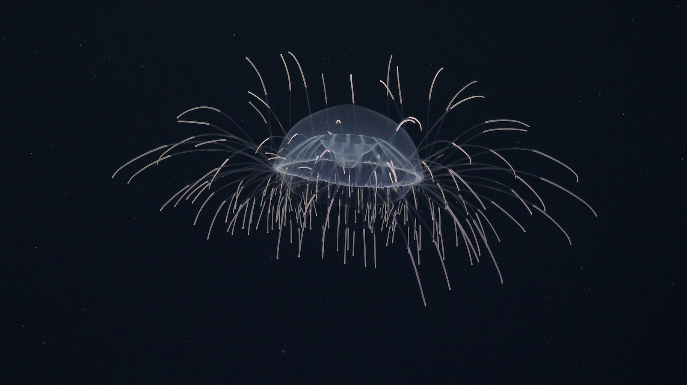
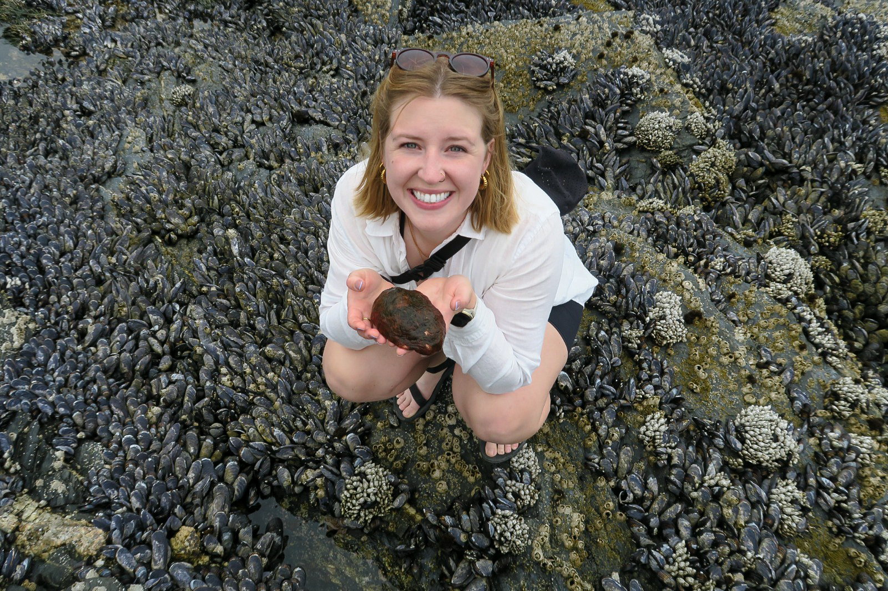
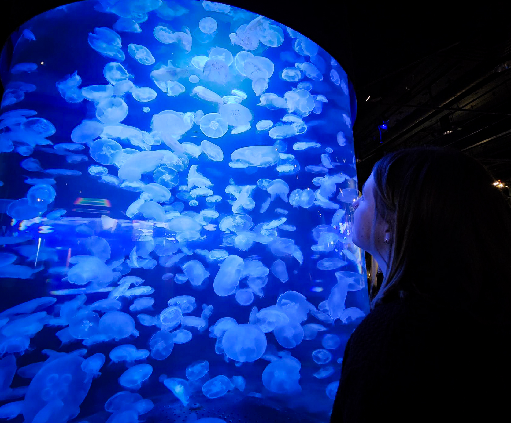

Deep-sea ecologist studying biodiversity in some of the most remote and least understood places on the planet.



I am the Research Manager for the Bates Lab at the University of Victoria. I coordinate multiple grant-funded research projects — including the recently completed traitORS Project — many of which have direct monitoring and management implications for offshore marine regions.
I completed my MSc in 2025. My thesis, Monitoring Deep-Sea MPAs: Functional and Trait-Based Approaches for Adaptive Management in Changing Oceans, explored how species traits and functional groups can support adaptive monitoring of vulnerable deep-sea ecosystems. I also teach marine invertebrate biology at UVic.
"Every time I slip into the ocean, it's like going home."
— Sylvia EarleThree research cruises. A sub dive to over 2,000 metres. Three newly discovered hydrothermal vent sites. Photos and video from places very few people have seen.
Deep-sea invertebrate and fish ecology, trait-based frameworks, vulnerability assessment, seamount monitoring, and marine protected areas.
Sessional lecturer in marine invertebrate biology at UVic. Science communicator. DOERs member. NatureFolx podcast. Skype a Scientist.
Natural history and scientific illustration — from deep-sea species to science communication diagrams. Commissioned work currently in progress.
Girard, F., J.M. Alfaro-Lucas, A.R. Baco, M.A. Davies, et al. Progress in Oceanography. 2026.
Read paper →R/V Atlantis (AT50-42). Established a long-term deep-sea coral and sponge monitoring transect using the iconic DSV Alvin submersible.
See the expedition →Bates, A.E., M.A. Davies, et al. Biological Conservation 293:110566. 2024.
Read paper →Questions about my research, collaboration ideas, science communication, or illustration work — I'd love to hear from you.